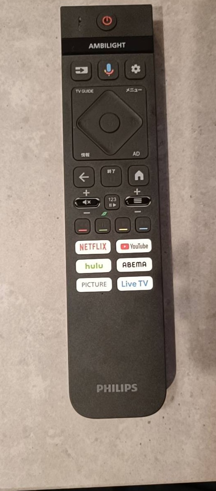
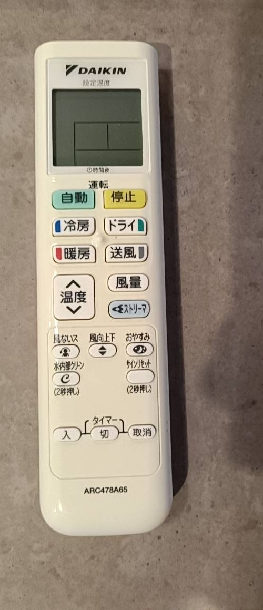
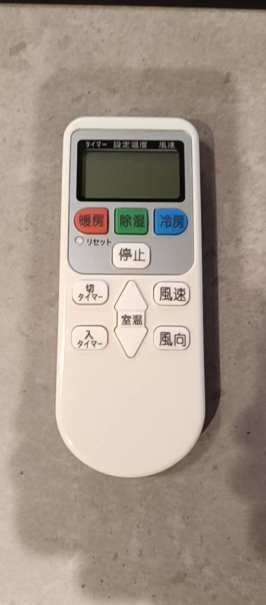
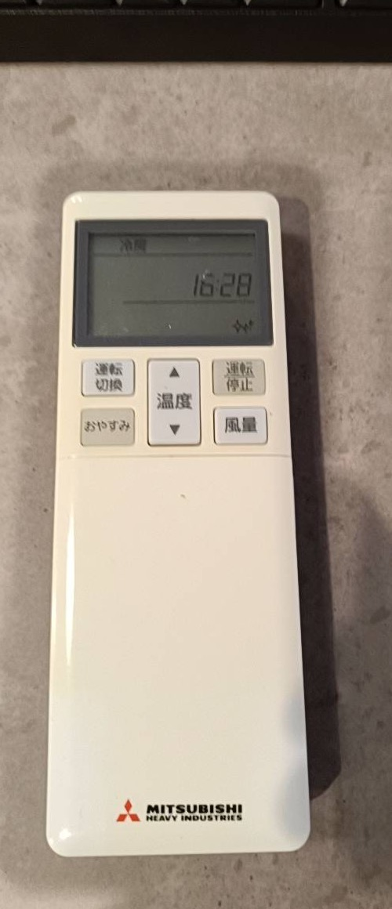
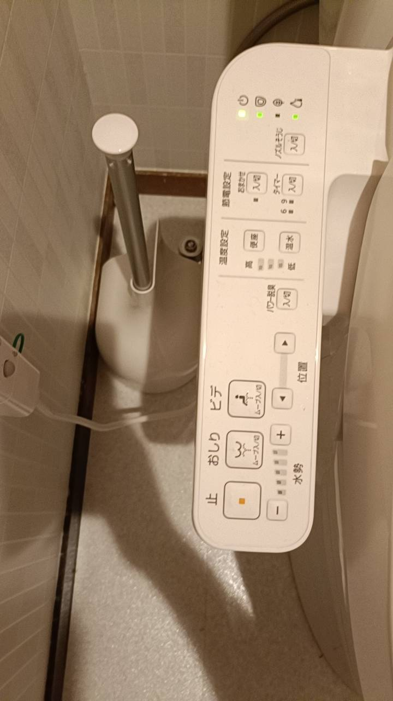
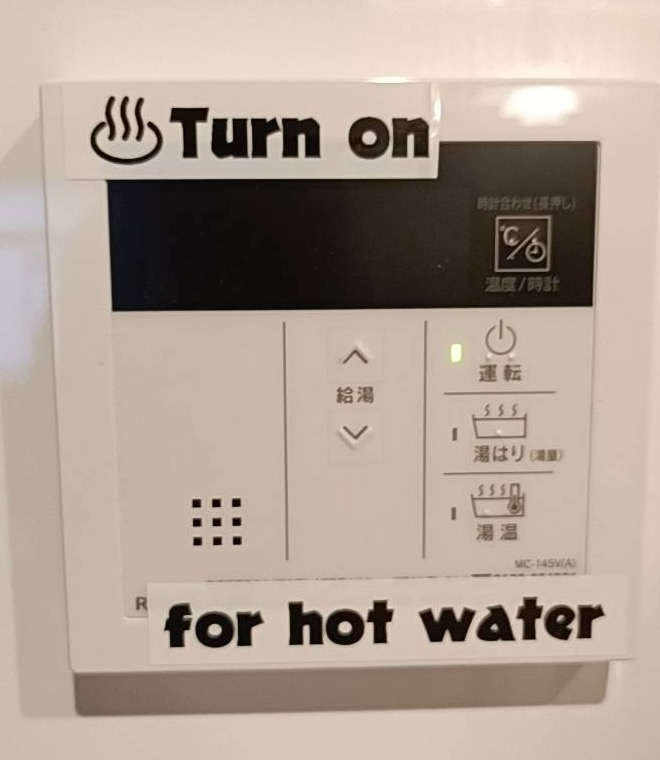

Air Conditioner Button Guide
ENGLISH
- COOL
- TEMP. / SET TEMP.
- HEAT
- DRY
- AUTO
- SLEEP TIMER
- STOP
中文（简体）
- 制冷
- 温度 / 设定温度
- 制热
- 除湿
- 自动
- 睡眠定时
- 停止
한국어
- 냉방
- 온도 / 설정 온도
- 난방
- 제습
- 자동
- 취침 타이머
- 정지

POWER APPSTV Remote
Use the red power button at the top. Netflix, YouTube, Hulu, ABEMA, and Live TV have dedicated buttons.
電源Power
ホームHome / Smart TV menu
戻るBack
終了Exit

AUTO COOL HEAT STOPAir Conditioner Remote
Choose AUTO, COOL, HEAT, DRY, or FAN, then adjust temperature and fan volume.
自動Auto
停止Stop
冷房Cool
暖房Heat
ドライDry / dehumidify
送風Fan only
温度Temperature
風量Fan speed

HEAT DRY COOL STOPSimple Air Conditioner Remote
Use the colored buttons for HEAT, DRY, and COOL. Use the large STOP button to turn it off.
暖房Heat
除湿Dry / dehumidify
冷房Cool
停止Stop
室温Room temperature / temperature setting
風速 / 風向Fan speed / airflow direction

START TEMP. FANMitsubishi Air Conditioner Remote
Press operation to start, choose mode, then adjust temperature with the center buttons.
運転 / 停止Start / stop
運転切換Change mode
温度Temperature
風量Fan speed
おやすみSleep timer

STOP REAR BIDET PRESSUREToilet Washlet
Use stop after using the spray. The plus and minus buttons adjust water pressure.
止Stop
おしりRear wash
ビデBidet
水勢Water pressure
便座 / 便温Seat temperature

TURN ON HOT WATERHot Water
Press the operation button to turn on hot water before using the bath or shower.
運転Operation / on
給湯Hot water
湯はりFill bathtub
湯温Water temperature